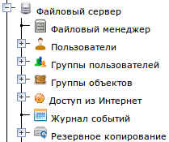
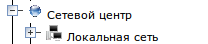
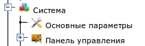

Начало работы
Для начала работы с сервером рекомендуем
подключиться к нему в режиме Панели управления сервером, так как
большинство функций можно выполнять из нее.
Панель управления сервером представляет функции сервера в виде дерева,
корнем которого является сам сервер (LVA Business Server). Из него
исходят как ветви разделы основных подсистем: "Файловый сервер", "Сетевой центр",
"Система" и "Документация". В каждом из них находятся подразделы, реализующие конкретные функции каждой подсистемы.
Файловый сервер
|  |
В этом разделе можно:
- Работать с данными сервера: создавать, переименовывать, перемещать, копировать и удалять файлы и папки.
- создавать учетные записи
пользователей,
- создавать группы пользователей,
- устанавливать права
доступа пользователей и групп папкам и файлам
- делать некоторые папки доступными по сети: локально по протоколам SMB, NFS и AFP и через Интернет по протоколам FTP и WebDAV.
- просматривать журнал событий с файлами и папками и настраивать параметры журнала
- Если в Вашей конфигурации
установлен модуль управления сетью (есть раздел "Сетевой центр"), то
здесь же можно управлять правами доступа компьютеров локальной сети к общим папкам.
- Если в Вашей сети есть почтовый сервер Mystix Collector MX и настроена интеграция файлового
сервера с ним (см. "Интеграция с другими серверами"), то при создании
пользователя, для него будет автоматически создаваться почтовый ящик на
почтовом сервере.
|
Сетевой центр
|  |
Этот
раздел взят из другого продукта - Mystix Controller. Он
позволяет построить схему сети, которая окружает файловый сервер,
создать все подсети и зарегистрировать компьютеры, которые в них
находятся. Эта информация используется DHCP-сервером для того чтобы
автоматически раздавать зарегистрированным компьютерам сетевые
настройки, такие как IP-адрес, маска сети и адреса DNS. Также, имена и
адреса компьютеров и других сетевых устройств, зарегистрированных в
Сетевом центре, автоматически попадают в базу данных DNS-сервера. Таким
образом в сети организуется единое пространство имен и все компьютеры,
использующие LVA Business Server в качестве
сервера DNS, могут общаться друг с другом, используя имена, а не
IP-адреса. Сетевой центр интегрирован с файловым сервером, что
позволяет настраивать права доступа каждого компьютера к общим папкам
файлового сервера. Также сетевой центр может быть интегрирован с
Интернет-шлюзом Mystix Bastion ACS (см. "Интеграция с другими
серверами"). В этом случае с помощью этого раздела можно управлять
параметрами доступа каждого компьютера к Интернет.
|
Система
|  |
В
этом разделе находятся базовые настройки самого сервера, а также
настройки Панели управления. В этом разделе можно изменить IP-адрес
сервера,
пароль суперпользователя root, имя сервера и имя его рабочей группы.
Также в этом разделе можно изменить пароль администратора панели
управления, а также создавать дополнительные учетные записи
администраторов панели управления. Также в этом разделе можно настроить
интеграцию контроллера с другими серверами, такими как Интернет-шлюз и
почтовый сервер.
|
Документация
|
В этом разделе находится данное руководство пользователя в электронном
виде, а также, в зависимости от конфигурации сервера и версии панели
управления, в нем могут находиться дополнительные справочники и другие
информационные ресурсы.
|
Разверните и посмотрите содержимое этих разделов, все что есть в
них базовом варианте. Возможно этого будет достаточно для решения ваших
задач и можно дальше ничего не настраивать. Если же нужна более тонкая
настройка, то открывайте соответствующий раздел и смотрите его
настройки. Однако, прежде чем конфигурировать файловый сервер или
сетевой центр, рекомендуем настроить основные параметры системы:
изменить пароль суперпользователя root и администратора панели
управления, а также, параметры подключения к сети.